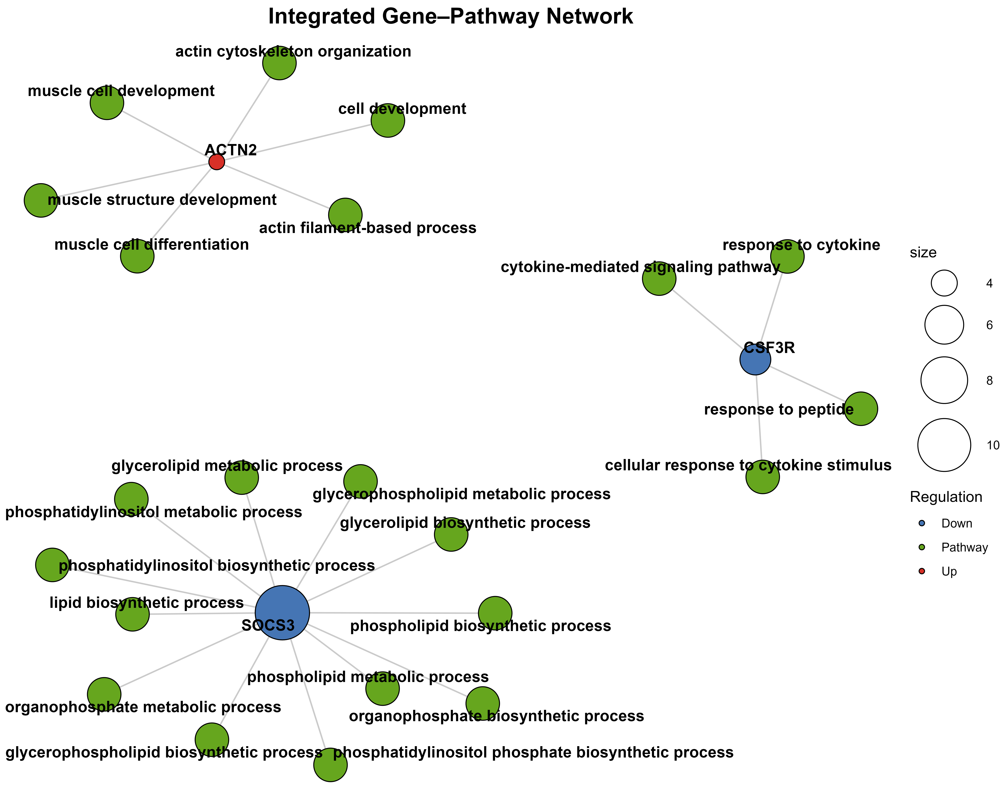

Animal Genomics | Bioinformatics | RNA-seq Analysis
PhD Researcher in Animal Science specializing in RNA-seq, functional genomics, molecular biology and bioinformatics analysis.
View Academic CV Request Bioinformatics Analysis
PhD in Animal Science
Çukurova University, Türkiye
5 Peer-reviewed Research Articles
Poultry Science, Nutrition and Biotechnology
Transcriptomics
Differential Expression Analysis
Functional Genomics
Gene cloning training
BLAST sequence analysis
Bacterial identification
Poultry Science Association
Professional Member
Peer-reviewed Publications
Transcriptomics Pipeline Development
Bioinformatics Tools & Methods
Professional Membership
Scientific Peer Review Experience

Transcriptomic analysis of feeding-related molecular responses in broiler breeder chickens using reproducible bioinformatics workflows.
Research background includes:
RNA-seq analysis, functional enrichment, biological interpretation and scientific visualization.
ServicesOpen to collaborations with universities, research laboratories and biotechnology organizations.
Contact Me